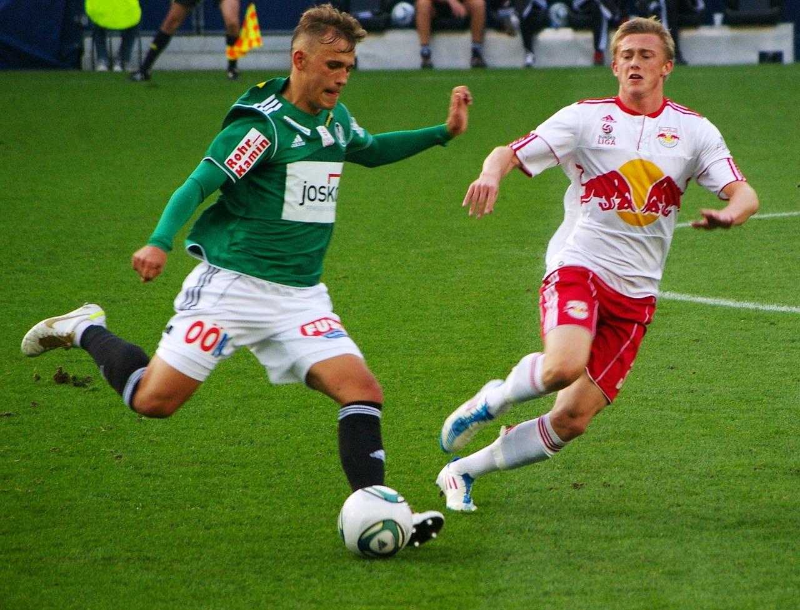
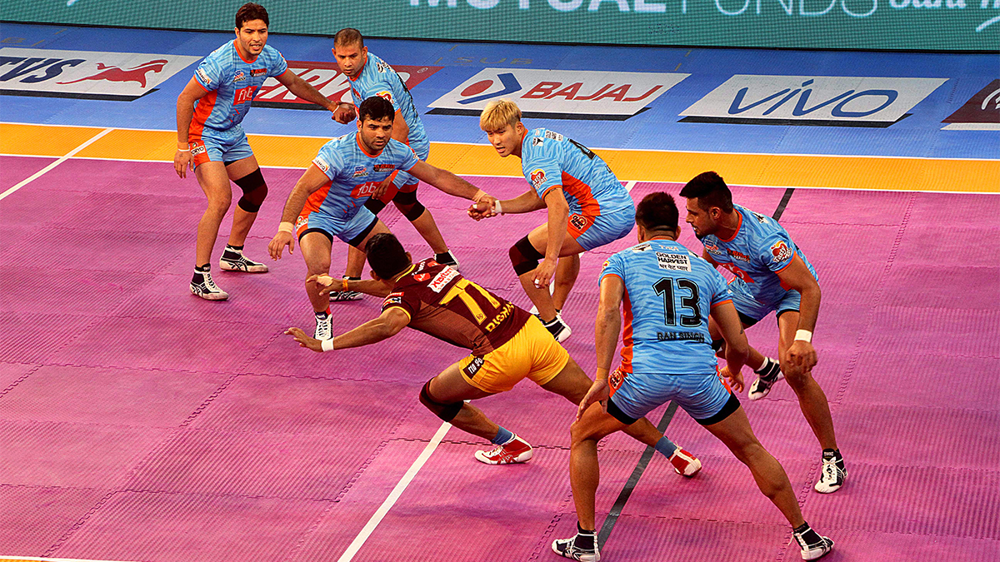

My Five Favourite Sports
Author of this page : Mr. Putchala Nagababu
Cricket

This exciting and fast-paced sport has a long history, dating back to the 13th century when it was first played on village greens and in fields across England. Today, cricket is especially popular in Australia and the United Kingdom , but people of all ages and from all corners of the world enjoy and participate in leagues and tournaments. Whether you are new to cricket or an experienced player, there are plenty of ways to get involved in this thrilling sport! There are many reasons why cricket has become so popular. For one thing, this game is incredibly dynamic, with batsmen running between the wickets and bowlers spinning the ball at high speeds. Additionally, cricket is a strategic game, with players having to make quick decisions on the fly in order to succeed. Cricket also has a strong social aspect that makes it so popular. This sport is often played as part of a team or community, bringing people together from all walks of life. Whether you are cheering for your local club or international team, there is something truly special about bonding over this beloved game.
Football

Soccer is one of the most popular sports in the world, with over 3.5 billion fans around the globe. Known as football in many parts of the world, this exciting sport has gained a huge following due to its thrilling gameplay and fast-paced action. Whether you are a casual spectator or an avid player, there is no denying that soccer is one of the greatest sports out there. Soccer originated over 3000 years ago when it was first played by the Aztecs. They called it Tchatali and played with a rock for a ball. In the 2nd and 3rd centuries BCE, the first ball game, called Cuju, took place in China. They played with a leather ball filled with feathers. In ancient Greece and Rome, ball games were also played, however, not at the Panhellenic Games or in amphitheaters. Over time, it evolved into its current form and became popular all over Europe before spreading to other parts of the world. Today, millions of people enjoy watching soccer games and playing them on a regular basis. So why is soccer so popular? There are many factors that contribute to its continued success, including its speed and unpredictable outcomes. This leads to exciting and tense games that keep fans on the edge of their seats. In addition, soccer is also a very social sport, with spectators gathering together in stadiums and bars to cheer on their favorite teams.
Tennis
Known for its fast-paced action and high-stakes competition, tennis is a favorite among people of all ages and backgrounds. Whether you are an avid player or just enjoy watching from the sidelines, there are many reasons why tennis is such a treasured sport. One of the main reasons that tennis has become so popular over the years is that it is an accessible sport that people of all ages and abilities can enjoy. Unlike some other competitive sports, which require costly equipment or extensive training, all you need to play tennis is a racket and a ball. Additionally, there are countless public courts available in cities around the world, making it easy for people to find a place to play. Another reason why tennis is so beloved is that it is competitive. From the grand slams like Wimbledon and the US Open to local club championships and high school tournaments, there are countless opportunities for athletes of all ages and abilities to compete against each other. Whether you are playing singles or doubles, going up against your opponents can be an exhilarating experience that pushes you to perform your best.
Hockey
This fast-paced, action-packed sport requires a lot of skill and precision but can be fun for both players and spectators. The origins of hockeydate back to the 18th century in England. Over time, different variations of the sport developed as people played their own versions of the game. Some notable examples include field hockey (played on grass or turf fields), street hockey (played on asphalt or concrete), and roller hockey (played on roller skates). Ice hockey originated in Canada and was quickly adopted around the world as the predominant form of this sport. So how exactly is hockey played? Well, it can vary depending on the type of hockey. For instance, in field hockey players use curved sticks to hit a small ball into their opponent's goal. Ice hockey players do the same thing. They use sticks to hit a puck but play on an ice rink instead of a field and wear skates rather than cleats. Street and roller hockey are also fairly similar. Both involve hitting a puck with sticks and playing on surfaces like asphalt or cement rather than grass or turf. Despite its popularity across the globe, there are still some people who do not know much about this beloved sport. If you are one of them, then now is the perfect time to learn more about hockey and all that it has to offer. Whether you are a long-time fan or discovering it for the first time, there is no better way to spend your free time than by tuning in to watch some high-quality hockey games!
Kabbadi

Kabaddi is a contact team sport.Played between two teams of seven players, the objective of the game is for a single player on offence, referred to as a "raider", to run into the opposing team's half of a court, touch out as many of their defenders as possible, and return to their own half of the court, all without being tackled by the defenders, and in a single breath. Points are scored for each player tagged by the raider, while the opposing team earns a point for stopping the raider. Players are taken out of the game if they are touched or tackled, but are brought back in for each point scored by their team from a tag or tackle. To know more click here